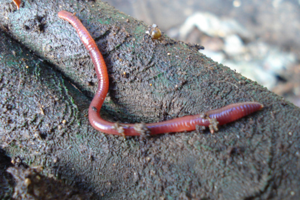

O reino animal é dividido em vários filos, sendo os mais conhecidos:Porifera, Cnidaria, Platyhelminthes,
Nematoda,
Annelida, Mollusca, Arthropoda, Echinodermata, Chordata.
Porifera: os animais pertencentes ao grupo dos poríferos são conhecidos popularmente
como
esponjas. São animais sésseis e que não apresentam tecidos verdadeiros. São conhecidos como poríferos
devido à
presença de vários poros em seu corpo.
As esponjas apresentam o corpo repleto de poros.
Cnidaria: animais que possuem uma cavidade gastrovascular e uma abertura única, que
funciona
como boca e
ânus. Nesse grupo estão as águas-vivas, hidras e corais.
Águas-vivas são exemplos de cnidários.
Platyhelminthes: animais que apresentam corpo achatado dorsoventralmente, sendo,
devido a essa
característica, conhecidos também como vermes planos ou achatados. Existem espécies de vida livre e
parasitas, sendo essas últimas as mais conhecidas. Como exemplos de platelminto, podemos citar a tênia e
o
esquistossomo.
Platelmintos são vermes de corpo achatado.
Nematoda: animais que apresentam corpo cilíndrico com as extremidades afiladas. Podem
ser
encontrados no solo e em ambiente aquático, bem como vivendo em plantas e animais. A lombriga é um
nematódeo bastante conhecido, sendo responsável por causar doença no ser humano.
Nematódeos apresentam o corpo cilíndrico e afilado nas extremidades.
Annelida: animais que apresentam corpo formado por uma série de anéis fusionados.
Ocorrem no
solo úmido e no ambiente aquático, tanto de água doce quanto marinho. Sanguessugas e minhocas são
exemplos de anelídeos.

Anelídeos apresentam corpo repleto de anéis.
Mollusca: todos os moluscos apresentam um corpo mole, o qual pode ser ou não protegido
por
uma concha. São encontrados em diferentes ambientes, porém a maioria é marinha. Como exemplos de
moluscos, podemos citar lesmas, polvos, lulas e mariscos.
Moluscos apresentam corpo mole e, muitas vezes, protegido por conchas.
Arthropoda: maior grupo de animais conhecido, apresentando mais de um milhão de
espécies. São encontrados em todos os ambientes e apresentam como características marcantes
a presença de um exoesqueleto quitinoso e apêndices articulados. Nesse grupo temos como
representantes os insetos, aranhas, escorpiões, carrapatos, ácaros, lagostas, camarões,
lacraias e embuás.
Artrópodes possuem corpo envolvido por um exoesqueleto.
Echinodermata: animais que vivem no ambiente marinho e apresentam um endoesqueleto
formado por placas calcárias rígidas. Muitos equinodermos apresentam espinhos recobrindo
seu corpo. Estrela-do-mar e ouriço-do-mar fazem parte desse grupo.
Muitos equinodermos possuem corpo coberto por espinhos.
Chordata: todos os cordados compartilham quatro características básicas:
presença de notocorda, cordão nervoso dorsal oco, fendas faringianas e uma cauda
muscular pós-anal. Apesar de não ser o grupo mais numeroso de animais, os cordados
se destacam como o grupo mais conhecido, uma vez que nesse grupo estão os
vertebrados, cordados com coluna vertebral. No grupo dos vertebrados, temos os
peixes, anfíbios, répteis, aves e mamíferos.
Os vertebrados são cordados que apresentam coluna vertebral.
Dos grupos citados acima, poríferos, cnidários, platelmintos, nematódeos, anelídeos,
moluscos, artrópodes e equinodermos são conhecidos como invertebrados, devido à
ausência de coluna vertebral e crânio. 95% das espécies animais conhecidas são
invertebrados. Os animais chamados de vertebrados, por sua vez, correspondem a um
grupo de animais do filo Chordata que possui coluna vertebral e crânio.